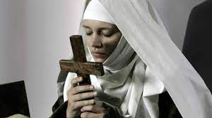
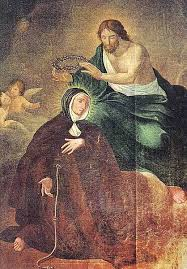
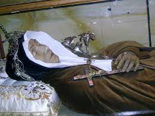

“CASAMENTO
DIVINO E MORTE”
ESPONSALÍCIO MÍSTICO DE JESUS COM VERÔNICA

No mês de Abril de 1694,
durante a Semana Santa, na manhã do Sábado Santo dia 10, o SENHOR lhe apareceu todo
glorioso, e a convidou para as núpcias na manhã do dia seguinte, domingo dia 11
de Abril, mostrando-lhe ao mesmo tempo o lindo anel nupcial. (Pensou Verônica)
“Pareceu-me que o SENHOR me
dava uma nova regra de vida, sendo mais austera, silenciosa, fazer tudo com
pureza de intenção, ser amante das Obras Divinas, devia fugir aos louvores
humanos, amar o desprezo e a mortificação, ser fiel amante da Cruz tendo-a
sempre a mão, como escudo poderosíssimo, conservando-me inteiramente
crucificada, e sempre, praticando tudo o que for mais perfeito”.
Apareceu a excelsa Rainha dos
Anjos, em trono magnífico, tendo ao seu lado Santa Catarina de Senna e do outro
lado Santa Rosa de Lima, na expectativa da realização das Núpcias, na manhã
seguinte, Domingo 11 de Abril.
No dia seguinte, durante a manhã
Verônica estava com o coração alegre e feliz e abrasado num fogo Divino, em
suspense, aguardando o momento do “esponsalício”. Ao se aproximar
para receber a Sagrada Comunhão Eucarística, primeiro ouviu os Anjos cantarem
suavemente a melodia: “Veni,
Sponsa Christi”,(Vem
Esposa de CRISTO). Depois, arrebatada
dos sentidos, viu dois tronos magníficos ornado com formosíssimas pedrarias
preciosas, todo de ouro, no qual estava sentado NOSSO SENHOR, com as chagas
mais resplandecentes que o sol. O outro trono era formado de alvíssimo alabastro e
ornado com lindas jóias, onde estava sentada a Divina MÃE DE JESUS, coberta com
um cândido e precioso manto. Era imensa a multidão celeste presente. Do meio da
multidão, se adiantaram Santa Catarina de Senna e Santa Rosa de Lima. Elas
conduziram Verônica com passos lentos para junto dos tronos, que estavam um ao
lado do outro, e à medida que caminhavam e se aproximavam, iam revestindo
Verônica com diversas vestes, cada uma mais preciosa e mais bonita que a outra,
colocadas por cima do Hábito Religioso. Assim, aproximando-se do trono de JESUS,
ela viu nas Chagas das Mãos e dos Pés DELE, belíssimas jóias. A Chaga do Lado de
JESUS estava aberta e dela saia uma grande quantidade de raios mais luminosos
que o Sol. Nessa chaga lhe pareceu ver o Anel Nupcial, onde teria querido se
lançar para habitar permanentemente. O SENHOR levantou a mão para abençoá-la e
com benigno aspecto disse:
“Veni Sponsa CHRISTI”!E MARIA SANTÍSSIMA,
acompanhada pela multidão celeste continuou com o restante da frase:
“Accipe coronam quam tibi Dominus
paeparavit in aeternum”.(Vem
Esposa de CRISTO, pegue a Coroa que o SENHOR preparou para você para sempre).
Verônica com passos lentos para junto dos tronos, que estavam um ao
lado do outro, e à medida que caminhavam e se aproximavam, iam revestindo
Verônica com diversas vestes, cada uma mais preciosa e mais bonita que a outra,
colocadas por cima do Hábito Religioso. Assim, aproximando-se do trono de JESUS,
ela viu nas Chagas das Mãos e dos Pés DELE, belíssimas jóias. A Chaga do Lado de
JESUS estava aberta e dela saia uma grande quantidade de raios mais luminosos
que o Sol. Nessa chaga lhe pareceu ver o Anel Nupcial, onde teria querido se
lançar para habitar permanentemente. O SENHOR levantou a mão para abençoá-la e
com benigno aspecto disse:
“Veni Sponsa CHRISTI”!E MARIA SANTÍSSIMA,
acompanhada pela multidão celeste continuou com o restante da frase:
“Accipe coronam quam tibi Dominus
paeparavit in aeternum”.(Vem
Esposa de CRISTO, pegue a Coroa que o SENHOR preparou para você para sempre).
Nesse momento Santa Catarina
começou a tirar as vestes que tinham colocado, deixando-a somente com o Hábito
Religioso."Imagino que essa cerimônia
teve o objetivo de evidenciar a preciosidade do Hábito Religioso"
. Em seguida o SENHOR fez um sinal a NOSSA
SENHORA, para que vestisse Verônica com a veste nupcial, a qual consistia num
manto coberto de jóias, formando diversas cores. MARIA SANTÍSSIMA entregou a
Santa Catarina, que revestiu Verônica com ele, e a colocou entre os dois tronos
de JESUS e NOSSA SENHORA. A Irmã viu que o SENHOR retirou de seu dedo o Anel
Nupcial e entregou a NOSSA SENHORA SUA MÃE. O Anel era lindo e resplandecente.
Parecia feito de ouro e também era esmaltado, e o esmalte formava na pedra o
nome de JESUS. Então a MÃE DE JESUS deu ordem a Verônica que estendesse a mão
direita para Santa Catarina, e tendo ela atendido, o SENHOR tocou a SUA MÃO na
dela. Nesse momento disse Verônica: “Senti uma união mais íntima com ELE”.
Então “JESUS e SUA MÃE SANTÍSSIMA
colocaram o anel no dedo anular de Verônica e o SENHOR benzeu-o”.
A linda cerimônia chegava ao fim
com uma calorosa salva de palmas da multidão emocionada.
A TENTAÇÃO DIABÓLICA
O demônio cheio de ódio contra
Verônica, vendo-a tão estreitamente unida a JESUS, sempre buscava preparar um
ardil com todo requinte de perversidade, para torná-la infiel ao SENHOR. O
bandido chegou ao máximo de se revestir da imagem humana de Verônica e em
companhia de outros demônios jovens terríveis e licenciosos, prepararem
demonstrações abomináveis, que enchiam de aborrecimentos o pudor e a própria
natureza. Heroicamente ela resistiu a tudo com firmeza, com total indiferença
e muita personalidade.
EXERCÍCIOS ESPIRITUAIS

Em Março de 1696, com objetivo de
ampliar a sua força de concentração espiritual, fez com bastante competência, os
Exercícios Espirituais de Santo Inácio, também com o objetivo maior de purificar
cada vez mais a sua alma, fortalecendo-a contra os ataques diabólicos.
AS MUITAS ENFERMIDADES
Suas companheiras religiosas
contam em diversas partes do processo canônico, as frequentes e asperíssimas
enfermidades que envolveram e lhe provocaram grande sofrimento no corpo, no
decurso da sua vida, enfermidades que ordinariamente os médicos não conseguiam
determinar as causas e, por conseguinte, não sabiam achar os remédios
apropriados para combater o mal em cada caso, mas para admiração e espanto, as
enfermidades sempre acabavam com uma cura inesperada e prodigiosa, de maneira
que no Convento, entre as Irmãs, Verônica ganhou uma fama especial:
“Verônica vivia unicamente por Milagre
Divino”.
FINAL DA SUA IMPRESSIONANTE
EXISTÊNCIA
Dia 8 de Julho de 1727, depois de
uma longa agonia, como verdadeiramente ela sempre desejou, concluindo de modo
perfeito e completo a purificação da sua alma, para o seu encontro definitivo
com seu “Esposo Crucificado”
, teve a quarta visita do senhor Bispo que
a acompanhou com atos de fé bem intensos e perfeitos, realizado com mais esperança
e caridade. Depois ela pediu ao senhor Bispo, a Bênção Pastoral e a Bênção Pontifícia
“in articulam mortis”,
que ele lhe conferiu benignamente. Depois o senhor
Bispo se despediu, e entrou em seguida, também para lhe dar uma Bênção Especial,
o Padre Confessor da Ordem do Santíssimo Rosário e das Sete Dores (de NOSSA
SENHORA). Durante todos os encontros, ela se mostrou tranquila, mas sempre
segurando com a mão direita, carinhosamente e com firmeza o SENHOR CRUCIFICADO.
Olhando o Crucifixo que tinha
sempre consigo, ao qual chamava “O Porteiro do Coração”,lhe serviu
também de grande alívio em seus acerbos martírios, fato que manifestou claramente
numa ocasião em que chamando junto a si algumas jovens, disse: “Vinde aqui: o AMOR fez-SE presente! Este
é o motivo do meu penar: dizei-o a todos”.

Ao anoitecer entrou em agonia,
perdendo a fala. O Padre Confessor fez-lhe a encomendação de costume, sendo as
orações acompanhadas por todas as religiosas, que se mantinham
presentes. Durante o tempo de agonia que foi de três horas, não deu nunca o menor
sinal de agitação ou perturbação. Pela madrugada, observando o Confessor que pouca
vida lhe restava, lhe disse:
“Alegrai-vos Irmã Verônica, pouco falta para chegardes àquilo que tanto tendes
desejado”. Ouvindo estas palavras, deu
mostras de imensa alegria. Por fim, o Confessor animando-se de uma viva fé em
DEUS, aproximou-se dela e disse: “Irmã Verônica, se for do agrado do SENHOR ir gozá-LO,
e também se for agradável à Divina Majestade DELE que para essa passagem
intervenha também a ordem de SEU Ministro, eu vo-la dou”.
Apenas ele pronunciou estas palavras, ela
baixou os olhos em sinal de submissão; depois, volvendo o olhar sobre as suas
filhas presentes como para se despedir delas e também lhes conceder a sua
bênção. Em seguida, baixou finalmente a cabeça e exalou o último suspiro. Sua
alma bem-aventurada voou ao Céu para o seio do “Seu Amado, o SENHOR CRUCIFICADO”. Eram 3 horas e 15 minutos da madrugada de sexta-feira,
dia 9 de Julho de 1727, tendo ela 67 anos de idade, cinquenta anos de profissão
religiosa e onze anos como Abadessa do Convento.
BEATIFICAÇÃO E CANONIZAÇÃO
Ela foi
“Beatificada”, no dia 17 de Junho de 1804, no Vaticano, pelo Papa Pio VII (14/Março/1800 - 20/Agosto/1823).
E foi “Canonizada”, no dia
26 de Maio de 1839, no Vaticano, pelo Papa Gregório XVI (02/Fevereiro/1831 - 01/Junho/1846).
FESTA LITÚRGICA
Sua Festa Liturgia anualmente é
celebrada no dia 10 de Julho.
HOMENAGEM
O Mosteiro onde viveu na Itália
recebeu o seu nome: “MOSTEIRO DE SANTA VERÔNICA
GIULIANI”, na Città di Castello, Itália.

 PRÓXIMA
PÁGINA
PRÓXIMA
PÁGINA
PÁGINA
ANTERIOR
RETORNA
AO ÍNDICE